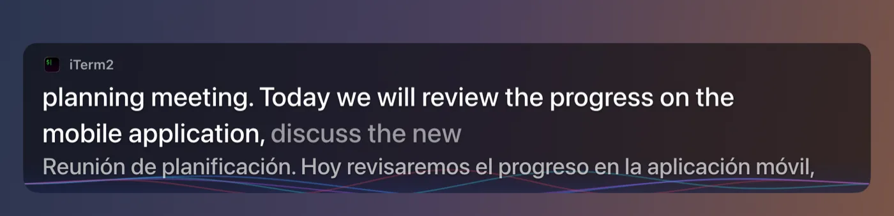
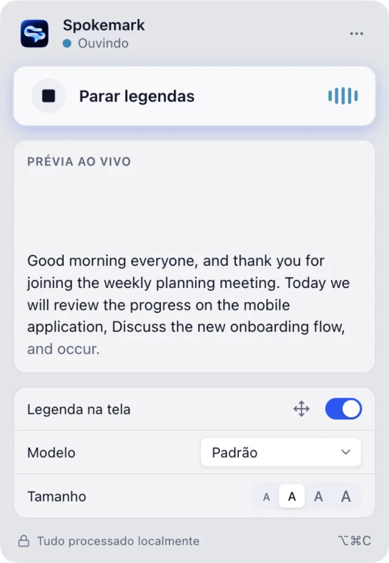
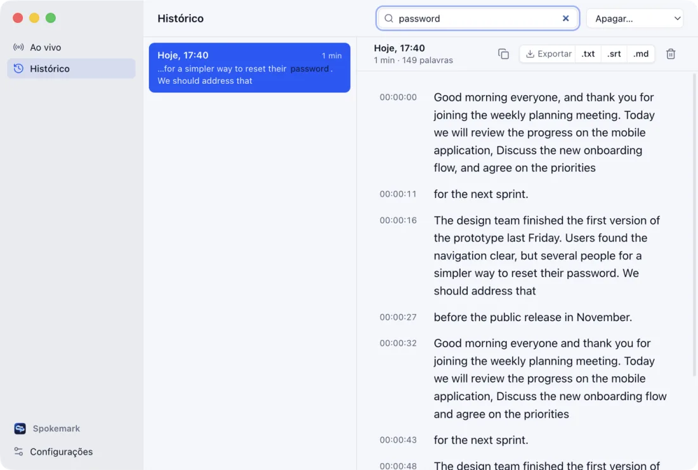
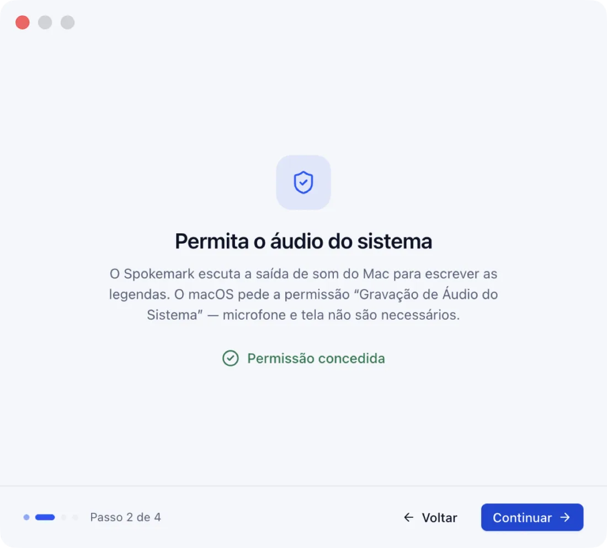

Captions on top of everything
A clean overlay that stays above full-screen apps and every Space. Clicks go straight through it; drag and resize it when you need to, and it remembers its place on each display.
Free & open source · MIT · v0.2.0
Spokemark puts live captions over every call, video and podcast — and can translate them as they appear. Speech recognition runs on your Mac's GPU. No account, no cloud, no bot joining your meeting.
macOS 14.2+ on Apple silicon · ~150 MB model, downloaded once · Not notarized yet — how to open it

MacBook Air M4, default model, real audio through the system output. Methodology, raw numbers and what we haven't verified →
Spokemark captions your Mac's sound output, not a specific app — so there's nothing to install in Zoom and nothing to join your call. For example:
A clean overlay that stays above full-screen apps and every Space. Clicks go straight through it; drag and resize it when you need to, and it remembers its place on each display.
Show the translation under the original — or only the translation. Translated on your Mac by Apple's translation engine, into the languages installed in System Settings.
The app the audio comes from — its icon and name — sits above the caption, and soft waves follow the voice. They stay still in silence and with Reduce Motion.
Every session is saved as text — never audio — and searchable across sessions. Export to .txt, .srt or .md. Turn history off, or keep it 7 days to forever.
Presets for standard, high-contrast and cinema captions; four fonts; size, background, 2–3 lines, top or bottom — with a live preview. Full keyboard control and VoiceOver labels.
An optional model starts a new line when someone else starts talking. It marks the change, not who spoke — and we publish how often it gets it right.


Five small, separate pieces. Each one is in the repository, with the reasons it was chosen over the alternatives.
A Swift helper creates a CoreAudio process tap on the Mac's output. Playback stays audible; no virtual audio driver.
Audio is resampled to 16 kHz and gated by the Silero voice detector. No speech, no transcription — so silence stays silent.
whisper.cpp runs the Whisper model on the GPU with Metal, in its own process, re-reading a sliding window every 500 ms.
Words are committed only when two consecutive passes agree (LocalAgreement). Confirmed text never changes; only the faint tail does.
The caption is drawn in the overlay and, if you want, translated on-device. Nothing touches the network.
Whisper doesn't stream word by word: latency is the step size plus inference plus agreement — about half a second in practice. All technical decisions →
Every claim below is in code you can read — and you can verify the network ones yourself.
~/Library/Application Support/Spokemark. Turn history off and nothing is kept.Start captions with translation on, then list the app's open connections:
lsof -nP -i -a -p $(pgrep -d, -f Spokemark.app)Our run printed nothing — zero sockets. A firewall such as LuLu or Little Snitch will show the same.
Prefer not to run our binary? Build it from source in four commands.
MIT-licensed code you can use, change, ship and sell — no trial, no license key, no "source-available" fine print.
No price, no subscription, no feature limits. The app and every update are free.
The code is MIT. Forks are welcome — just give them their own name and logo (brand policy).
Issues, ideas and pull requests are welcome. Measured results are part of every pipeline change.
git clone https://github.com/VitoorFranca/spokemark.git && cd spokemark
brew install cmake && npm install
npm run build:native && npm run models
npm run package # → release/Spokemark-darwin-arm64/Spokemark.app| Spokemark | Cloud meeting note-takers | Paid / source-available caption apps | |
|---|---|---|---|
| Price | Free | Usually a subscription | One-time or subscription |
| License | MIT (open source) | Proprietary | Proprietary or source-available |
| Where audio is processed | On your Mac | On the vendor's servers | Varies |
| Joins your meeting | Never | Often, as a bot | Varies |
| Works with any app | Yes | Supported meeting apps | Varies |
| Account required | No | Yes | Often a license key |
| Recognition languages | English | Many | Varies |
Check your download: shasum -a 256 -c SHA256SUMS.txt

Yes — and with any app that plays sound. Spokemark captions the Mac's audio output, so it doesn't need an integration, and nobody in the call sees it.
Speech recognition is English-only today (Whisper's English models). Translation can turn those captions into any language your Mac's translation supports — on macOS 26 or later.
Not yet: it captions what your Mac plays. In a call, that's everyone except you.
Only once, to download the speech model (about 150 MB). After that it works offline — captions and translation included.
On an M4 it used about 15 % of one CPU core on average during a captioning session and ~640 MB of memory, most of it the speech model. The heavy lifting runs on the GPU.
Apple silicon Macs (M1 or later) with macOS 14.2 or later. Live translation needs macOS 26.
Releases are signed ad hoc but not notarized, because the project doesn't have an Apple Developer ID yet. Right-click → Open once, or build it yourself from source.
Yes. Sessions are saved as text, searchable, and exportable to .txt, .srt (subtitles) or .md. You can turn history off at any time.
No catch: it's MIT-licensed open source. The name and logo are protected so forks don't look official — see the brand policy.
On our tests, 2–3 % word error rate with the default model on clear speech. Accents, cross-talk and noisy audio make it worse. Every number we quote is in the results document, with how it was measured.
Free, open source, and entirely on your Mac.